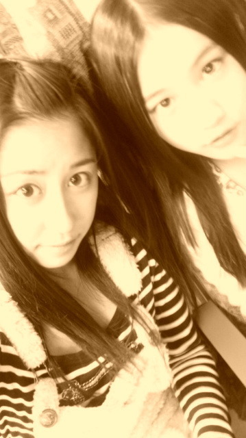
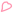

| 2012/02 24 Fri | わきゃるんっ♪( ｏ・ω・) ノ)) |
今日、昨日は
新潟
と
東京ソニービル
でミニ握手会がありました！♪(/ω＼
*
)
★新潟メンバー★
ななみん、みなみ、せっちゃん
と行ってきました！
新潟は雪がすっごいいっぱい積もっててびっくりした(@￣□￣@;)！！
だって車くらいの高さまで
道路のわきに積もってるんだもんっ
わおわおわおお
すごかったなぁ

あとね！
おすすめされた新潟名物イタリアン食べたよ
焼きそばの上にミートソースがかかってるやつ(
*
^ω^
*
)
おいしかったぁ...(≧∀≦)
気付いたら大盛完食してました(笑)(笑)
やばいかな...笑
まぁ美味しいのがいけないんだよ！(●｀ε´●)ぷう
また食べに行くつもり
そして...
新潟の皆さん本当に温かかったです(
*
´д｀
*
)
本当に！
皆さん全員！
嬉しかった...°・(ノД`)・°・
ありがとう！
誕生日おめでとうって言ってくださった方にも感謝します
ちょっと前のことだったのにもかかわらず
ありがとう！
嬉しかった...°・(ノД`)・°・
新潟の皆さん！
昨日はほんとにありがとうございました

初めまして♪の人が多くて、たくさんの人に会えたのが嬉しかった(
*
≧ω≦
*
)
デビュー日に、２回目の新潟で握手会ができたこと。
すごいいい思い出です(
*
´ω｀
*
)ノ
また３回目、４回目と何回でも行くから(ゝω・´
★
)
覚悟しといてー( ´艸｀)笑
本当にありがとう！

みなみとレトロ風写メ撮ってみた
in新幹線♪
★ソニービルメンバー★
あみあみ、ゆったん、まりか
とngngしてきたー(
*
´∀`)♪
去年のクリスマスウィークのときに１回ソニービル行ってたから
あっとほぉむな感じで、和やかムードでできたよ！(
*
^o^)／＼(^-^
*
)
わいわぁーい
新潟は初めまして♪の人が多かったけど
東京はやっぱりひさしぶり♪の人が多かったなぁ

だからあっとほぉむなかんじで出来たのかなぁ

来てくれた人ありがとう！
楽しい思い出作って行ってくれましたかね...(
*
´艸｀)
だったらいいなぁっ(ゝω・´
★
)
ぅわきゃっ
東京の皆さん！
今日はほんとにありがとうございました
今日は朝から雨が降ってたから来てくれるからちょっと不安で...
(;´д｀)
でもたくさんの方が駆けつけて下さってほんとに嬉しかった(
*
≧ω≦
*
)
また来てねっ(ゝω・´
★
)
って言ったら本当にまた来てくださった方がいっぱい！♪(/ω＼
*
)
るんるんるんるんるんっ
感動しました。
はい。Ｏ(≧∇≦)Ｏ
るんるんるんるんるんっ
本当にありがとぉぉぉぉおう！
また握手会で皆さんと会いたいですっ(
o
^−^
o
)
感謝しますっ
ありがとう(
*
´д｀
*
)

ということで！
皆さんのおかげでとても充実した握手会ができました。♪(ｏ・ω・)ノ))
楽しくできてよかったなぁ
日曜日に群馬の高崎にも行くのでぜひ来てくださいね
個別握手会もあるし！
全国握手会もあるし！
握手会がだいすきなちはるには嬉しい限りです(
*
^∀^
*
)ノ
えへっえへえへっ
あっ
アイドルパパラッチ
見てくださいましたかね？
(´・ω・｀)

インタビューに答えてるちはるはめっちゃ素！
写真もありのままの自分が出てるかなぁ♪
ぜひ見てください(
o
´д｀
o
)ノ゛
でゎっ
わきゃるんっなちはるんっでした
ばいるんっ
ちはるんっ
♪(ｏ・ω・)ノ))
コメント(57)
2012/02/24 00:00